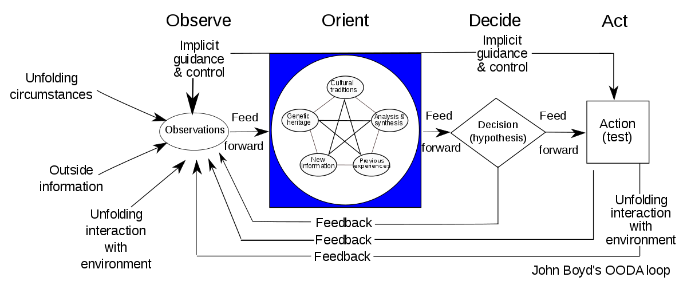

Actually using the OODA loop concept
If you’ve spent any time around modern American military thought, or strategy more broadly, you’ve almost certainly come across John Boyd’s observe-orient-decide-act (OODA) loop. It’s ubiquitous in tactical circles, and I think has an often under-appreciated role in the intellectual heritage of the lean startup community.
There are a lot of good articles on Boyd’s life and ideas floating around already, so I simply wanted to reflect a little bit on how I personally think about the OODA idea, and mental models more broadly.
 Obligatory: Boyd’s full OODA loop.
I was prompted into this by a couple of articles that approached the topic in a way very different from how I do. The first was a tactics instructor, talking about the OODA loop in the context of gunfighting and situational awareness. He described the OODA loop as a tool, a thing that one “should” do- to survive a gunfight, one should observe, understand what you’re observing, come to a decision, execute, and repeat. The second was a popular article, using OODA as a way to talk about decision-making more generally (the author had a USAF background). This was even more explicit about separating the phases of the OODA loop, highlighting the deliberate separation of the phases as one of the loop’s key “lessons”.
Separating information-gathering and decision-making can often be useful, and I have no doubt that the shooting instructor, a combat veteran, knows his stuff when it comes to gunfighting. Yet I can’t shake the feeling that talking about OODA as something one “should” do misses something fundamental.
In its simplest form, the OODA loop is a descriptive model of an open system responding to its environment in a feedback loop. It can be applied, with varying degrees of usefulness, to something as complex as a nation-state or as simple as an electronic control circuit. In each case, we have information flowing into a sensor or sensors. That information is filtered and processed to extract a signal from the information. That signal is evaluated, a selection from a possible set of actions is made. This decision flows outward, to systems or actuators that will translate it to an effect on the world.
For a system in isolation, or a system coupled to a large, complex-enough world that doesn’t take much interest in itA sort of mean-field approximation. If you’re a sole trader with a $500 Robinhood account, it’s fairly reasonable to treat the market an external entity, unresponsive to your actions. If you’re running the investment banking arm of a major Wall Street bank, it is not.
, one loop might be enough to describe the situation. If you have multiple agents that are explicitly concentrating on and responding to one another, you might need two or more loops to accurately describe the system, and the interesting dynamics emerge from the interplay between them.
In either case, the loop alone isn’t enough to tell you what to do, or even what will happen. Instead, it’s almost an attention management tool, letting you understand where to direct your focus in order to break up a problem. In general, this is how I try to think about mental models, and actually use them in practice. Like Gigerenzer’s heuristics, mental models let us filter down the complexity of the world into something we can manage. Unlike heuristics, which give us more or less prescriptive actions, mental models usually give us dynamics, a set of rules for predicting how our simplified picture of the world will play out. The conclusions depend on what you want, and how that model interacts with others.
This is why I’m personally not a fan of discussions of the OODA loop that focus on it as something decision makers should do, or as something that “tells” us the secret to victory in war (or business, or romance, or what have you) is to go faster. In the same way that a Newtonian model of mechanics lets us understand a machine by focusing on a particular description of it, OODA is a starting point for analysisMore polemically, saying an agent “should” use an OODA process is like saying a machine should involve forces- not really an insight, just a description. A human not undergoing some form of OODA process is called a corpse.
. The loop doesn’t tell us to go faster. Boyd does, as part of his greater theory, based on the analysis of the type of situations he tends to focus on: high-uncertainty, dynamic, bounded-rationality situations, where our understanding of the situation is always imperfect, and rapidly going out of dateIn these cases, he’s usually right, mind.
.
So, what’s the takeaway? Next time you have a problem that involves finding your way through uncertainty or conflict, how do you actually “use” the OODA loop?
Well, you use it to think. If you have a chance, do it on paper. Sketch a loop like the one above; one for yourself, and one for your adversary, if you have one. Then start to wrap meat around the abstract skeleton. What are you observing? The movements of an opponent in the ring? Medical vital signs? Customer emails? When you orient, what does that actually mean? What do you pay attention to or think about? How do you decide what to do, and how are those carried out? Likewise, for your opponent: you might not know everything, but you probably know more than you think: how do they learn about what you do? What do they pay attention to? How do you think they think? How do they think you think? How do they think you think they think…?
He registered and got the key and hobbled up the steps and
down the hall to his room and went in and locked the door and
lay on the bed with the shotgun across his chest staring at the
ceiling. He could think of no reason for the transponder sending
unit to be in the hotel. He ruled out Moss because he thought
Moss was almost certainly dead. That left the police. Or some
agent of the Matacumbe Petroleum Group. Who must think that
he thought that they thought that he thought they were very
dumb. He thought about that.
- No Country For Old MenWhen you have your model, play with it. What do you see, from a point of comfortable, Olympian reflection that you tend to miss when you’re busy actually doing things? Does your basic rhythm truly move you toward where you want to go? If you go faster, do you move closer to your goal, or just increase your risk? If you have an adversary, can you go than them? If not, can you slow them down, or bias them enough that their speed only helps them divert off course faster? This is the hard part, the creative part, the part that makes mental models tools for thinking, and not just cookie-cutter maxims. If nothing useful emerges, put it aside, try another model for the situation, and return a little later with a fresh perspective; when you’re trying to understand the world, it pays to be a Tetlockian hedgehog.
And, finally, if all else fails? If you don’t have the time or energy for that kind of analysis, if things are too murky, if there’s too much going on you don’t understand? Then probably, yeah, just go faster. In an unclear, changing situation, the heuristic is to choose whatever course of action lets you learn fast and adapt to that new information quickly. As previously discussed, I think that you want to be pairing conscious, detailed System 2 mental models with intuitive System 1 heuristics, and this is a perfect example. When you’ve done that, however, and you have time to take a breather, stop, take the information you’ve gained, and think more deeply about what’s really going on. The OODA loop has a lot more to offer than raw speed.